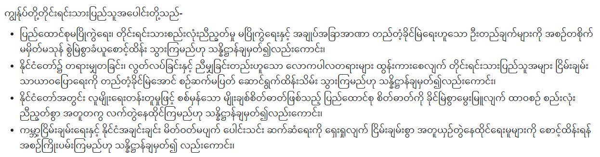

2025-12-04 【緬甸🇲🇲】現代緬文字-總覽 緬文為母音副標文字(Abugida)，是婆羅米系文字的一員，主要以書寫緬甸語(မြန်မာဘာသာ)、若開語(ရခိုင်ဘာသာ)、孟語(ဘာသာမန်)及撣語(ၵႂၢမ်းတႆး)。（註：本文章皆為現代緬甸語之用法）字母由孟文或驃文改造而成。書寫序由左至右。字母多呈圓形，十分具有辨識度，據說是因緬甸人過去在棕櫚葉上書寫，而直筆容易劃破葉片，因此演變出此種書寫系統。  緬文舉例(節錄自2008緬甸憲法前言) 字音現代緬甸語緬文字共有 Newer 【緬甸🇲🇲】現代緬文字-子音篇 Older Hello World